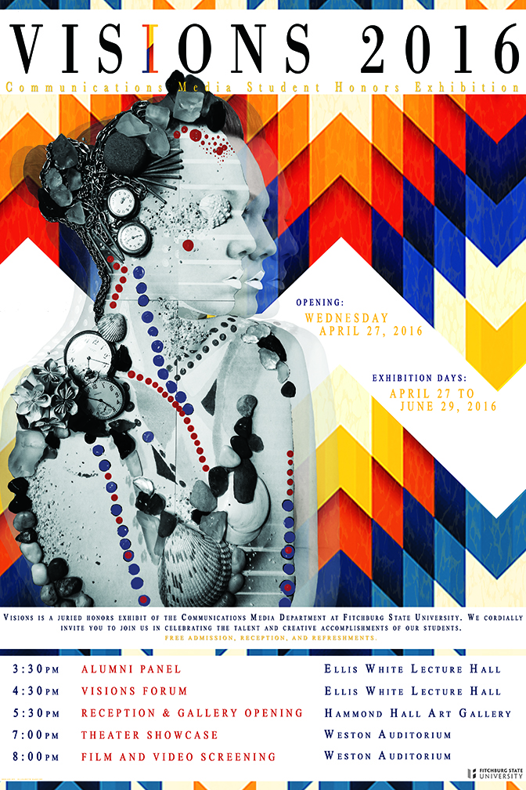
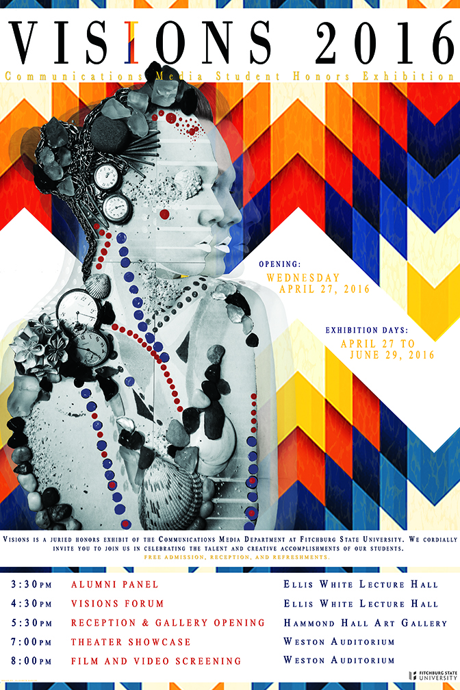

Graphic Design
This concentration provides a learning environment that fosters creative thinking and personal artistic development. The curriculum is carefully constructed to maintain a healthy balance between design thinking and design practice, allowing students to focus their attention on specialized aspects of the field in a series of courses. Experimentation is highly emphasized, and students are challenged to take risks in order to move beyond the comfort zone of “safe” design.


 
